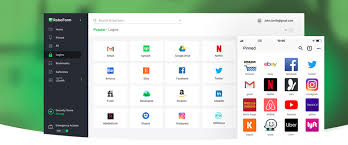
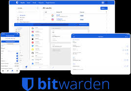

RoboForm is a password manager that allows for you to log into a website automatically by using a password and a 2 factor authentication. They have been in the market for a very long time and their user interface is easy to use and has all the feature. The free version has a lot of setbacks but the paid version is only $12 a year.
Bitwarden is a free password manager that has a lot of features that are not available in other free password managers. It has the ability to have data breach monitoring which can be very helpful. It has a very good user interface and it is open source which means that the code can be looked at by anyone. The only downside is that it does not have a 2 factor authentication which can impact security as they can just rely on passwords to access your entire passwords.
